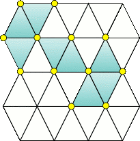
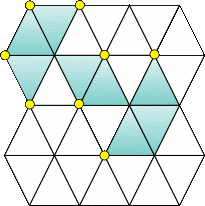
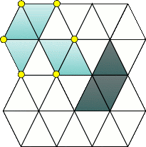
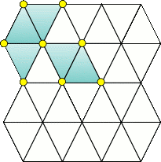
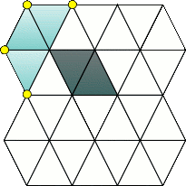
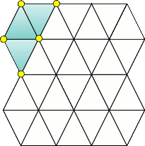
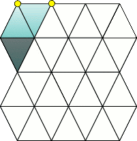
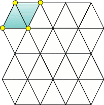

Chapter 3 カドゥケウスCaduceus
- 2ギルス/GUILT
-
Information
- バイタル 75/99
- タイムリミット 5分
Process
- キリアキの処置
Guide
キリアキの基本的な攻略はギルス攻略：キリアキを参照。
キリアキの対処方法は前回と全く一緒。違いは裂傷生成頻度がやや上がっているぐらい。それ以外は特に問題は無いだろう。
Special Bonus
条件 スコア MAX CHAIN 【30/40/50】以上 1000 【120/150/180】秒以上残して手術終了 500 Miss判定無し 500 Operation Rank
ランク スコア C ～7099 B 7100～7699 A 7700～8099 S 8100～8599 XS 8600～ for XS
普通にクリアしただけではスコアが足りない可能性がある。そこで、マザー前のキリアキ2匹を放置して、裂傷でスコアを稼ぐ。時間ギリギリまで稼げばXSに十分届くだろう。
Movie
- 4かけがえのない物/Something Precious
-
Information
- バイタル 75/99
- タイムリミット 5分
Process
- デフテラの処置
Guide
デフテラの基本的な攻略はギルス攻略：デフテラを参照。
Special Bonus
条件 スコア MAX CHAIN 【30/50/60】以上 800 【80/120/150】秒以上残して手術終了 500 Miss判定無し 700 Operation Rank
ランク スコア C ～6799 B 6800～7199 A 7200～7499 S 7500～7799 XS 7800～ for XS
あまりに処理が早すぎるとMAX CHAINが足りなくなる可能性があるので、CHAIN数を見て、足りないようなら泳がせること。後はミスさえしなければXSが出るだろう。
Movie
- 6最悪の患者/An Explosive Patient
-
Information
タイムリミット 5分
Process
- 4隅のネジをメスで回してカバーを開ける
- ピンセットでピンの位置を変えて電圧を調節
- レーザーで全てのパネルを破壊
- レーザーでコアを破壊
Guide
カバー
カバーは下にあるネジは外側に、上にあるネジは内側に回せばよいので、左下・右下・右上、左上の順に回せばよい。
電圧
プラグの抜き差しはちょっとコツが要る。まず、腕を伸ばして体の手前にリモコンを突き出す。この状態でピンセットでプラグを掴み、今度はゆっくり腕を曲げながら体の手前までリモコンを戻す。動きが速いとリモコンの前後移動を認識してくれないので注意しよう。
正しいプラグの位置は、左を一番上、右を下から2番目に挿す。
パネル
このステージ一番の難所。赤いパネルにレーザーを当てるか、パネルを通り越して中央の赤いコアに当てるとミスとなり、2回ミスすると手術失敗になってしまう。
一定間隔毎に赤パネルが隣接したパネルに移動するので、間隔を掴んで一気に破壊していきたい。
コア
残り時間が強制的に30秒になる。パネルが周囲を回転するので、パネルに当たらないようにコアにレーザーを当てよう。
Special Bonus
条件 スコア 超執刀を使用しない 1000 【120/90/80】秒以内にコア到達 700 ミスリミット・パネル未点灯 300 Operation Rank
ランク スコア C ～4499 B 4500～5299 A 5300～5999 S 6000 XS 6001～ for XS
コア到達まで80秒だが、実際にはカバーと電圧で20秒前後食ってしまう。残り60秒でパネルを全破壊することになるので、失敗を恐れずにとにかくレーザーで破壊するしかない。
Movie
- 8高度3000mの奇跡/Caduceus on a Plane
-
Information
- バイタル 99/99
- タイムリミット 5分
Process
- エコーで水が溜まっている箇所を探す
- メスで穴を開ける
- ドレーンで吸水
- ゼリーで閉じる
- 12箇所処置すると手術終了
Guide
手術中は一定間隔で揺れが襲ってくる。揺れている時はあらゆる動作がミスになり、裂傷が発生してしまうので注意する。揺れが来た時に吸水していない穴が存在した場合、炎症を起こしてしまうので消炎剤を投与すること。
肺水腫の処置について
処置の際、発見した全ての影にメスを入れてからドレーンで一気に吸おうとしないこと。吸水時のバイタルの減少も大きいが、穴を放置している際の減少もかなり大きい。
[メス→メス→ドレーン→ドレーン→ゼリー]だと30程度だが、[メス→ドレーン→ゼリー→メス→ドレーン→ゼリー]だと20程度の減少に抑えることができる。
影のパターン
影の場所は4種類のパターンの中からランダムで選ばれる。
パターンをエコー一発で見分ける方法がある。肺の左にある管の先付近でエコーをすると3パターンの影がヒットするので、影の位置で見分けることが可能。ヒットしなかったら残り一つのパターンとなる。
Special Bonus
条件 スコア Miss判定無し 1000 揺れ【7/5/5】回以内で手術終了 500 炎症発生個数を【10/6/3】個以内に抑える 300 【120/180/210】秒以上残して手術終了 200 Operation Rank
ランク スコア C ～5999 B 5700～6199 A 6200～6599 S 6600～6799 XS 6800～ for XS
とにかくミスに気をつけながら、毎回3個処理すれば十分間に合うだろう。3個処理したら、次の揺れが収まるまで影は発見できないので注意。
Movie
- 10許されざる研究/Pandora's Box
-
Information
- バイタル 85/99
- タイムリミット 5分
Process
- テタルティの除去
Guide
テタルティの基本的な攻略はギルス攻略：テタルティを参照。
画像付きで手順を解説
以下の画像がこのエピソードのテタルティの初期配置である。緑色の三角が膜で、黄色の丸が楔だ。

まず、以下のように楔を抜いていく。

楔が隣接していないか、していても既に膜が存在するか、壁際であるのがわかるだろうか。この状態で、一番右下の黄色の楔を抜くと、右下3枚の膜が剥がせるようになる。

右下3枚の膜を剥がしてみよう。腕の速さに自身が無いなら、1枚だけ剥がして全て生え揃うまで待ってから、同じ手順で楔を抜いていって残りの2枚を剥がす。

このようになるはずだ。次は中央の2枚を剥がしたいので、楔を抜いてしまう。

2枚とも剥がせる状態なので、剥がしてしまう。

残り三枚。膜が孤立すると増殖する危険性があるので、とりあえず1枚だけ剥がす準備をする。

そして1枚だけ膜を剥がす。

あとは、全ての楔を抜いて一気に剥がしてしまおう。
テタルティは楔の抜き方など、一定の慣れが必要だが、慣れてしまって法則も掴めば非常に楽な相手だ。
Special Bonus
条件 スコア 超執刀を使用しない 1000 膜を【13/8/2】枚以上増殖させない 500 【120/180/210】秒以上残して手術終了 300 Miss判定無し 200 Operation Rank
ランク スコア C ～5199 B 5200～5699 A 5700～5999 S 6000～6099 XS 6100～ for XS
法則を理解さえすれば容易にXSが出せる出せるはず。スコアが足りなくなった場合はガスを吸うことでスコアを稼ごう。
Movie
- » Chapter 4